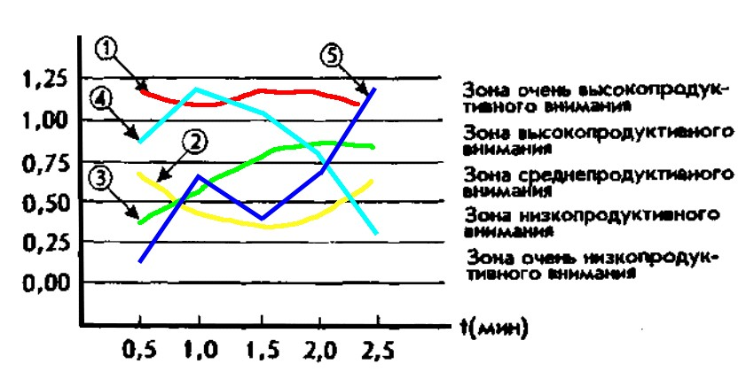
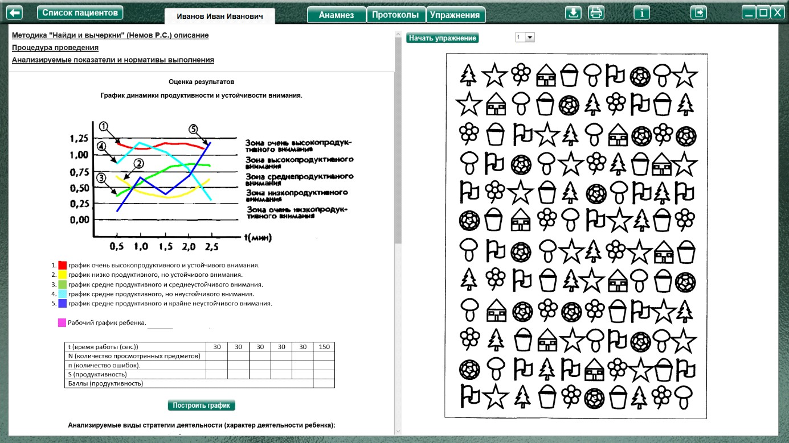
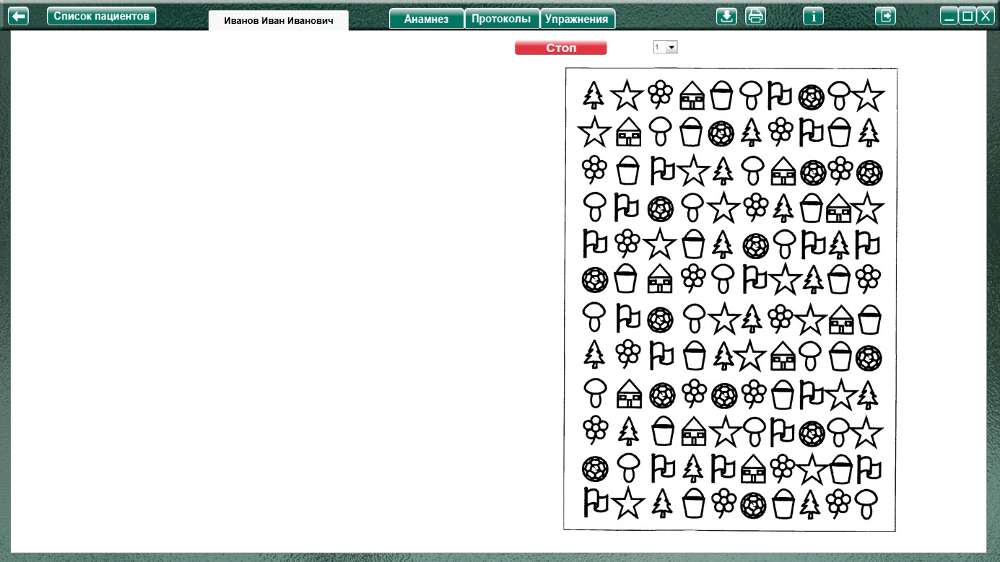
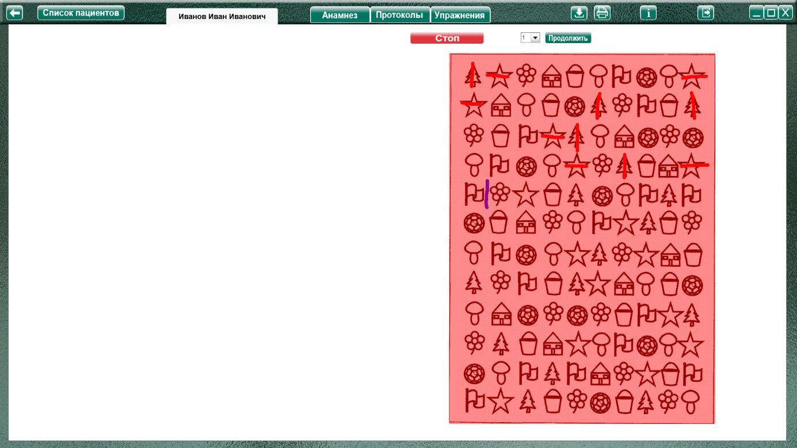
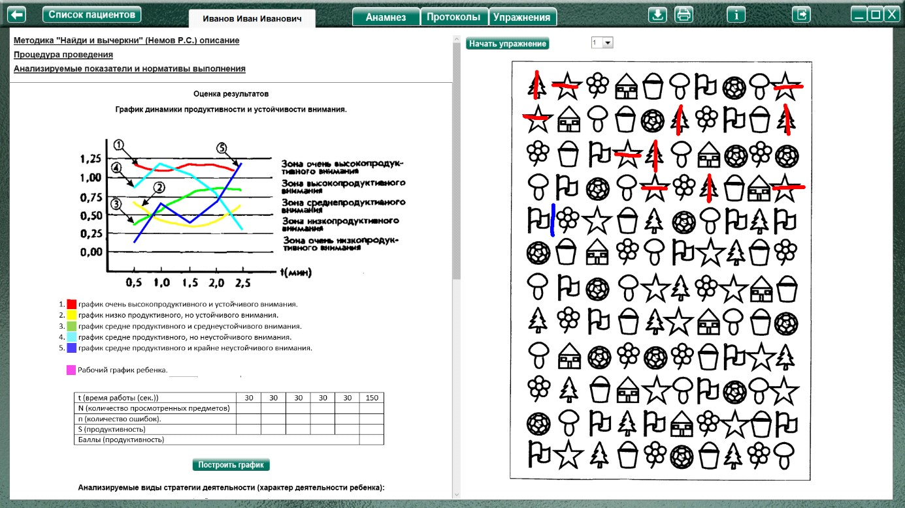
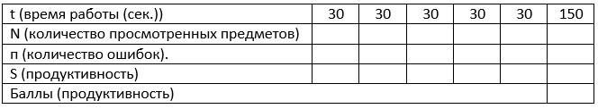

Методика "Найди и вычеркни" (Немов Р.С.)
Методика "Найди и вычеркни" (Немов Р.С.) описание
Процедура проведения.
Ребенок перед началом исследования получает инструкцию следующего содержания:
Задание 1 – для детей 3 – 4 года.
Задание 2 – для детей 4 – 5 лет.
«Сейчас мы с тобой поиграем в такую игру: я покажу тебе картинку, на которой нарисовано много разных, знакомых тебе предметов. Когда я скажу слово "начинай", ты по строчкам этого рисунка начнешь искать и зачеркивать те предметы, которые я назову. Искать и зачеркивать названные предметы необходимо до тех пор, пока я не скажу слово "стоп". В это время ты должен остановиться и показать мне то изображение предмета, которое ты увидел последним. После этого я отмечу на твоем рисунке место, где ты остановился, и снова скажу слово "начинай". После этого ты продолжишь делать то же самое, т.е. искать и вычеркивать из рисунка заданные предметы. Так будет несколько раз, пока я не скажу слово "конец". На этом выполнение задания завершится».
В этой методике ребенок работает 2,5 мин, в течение которых пять раз подряд (через каждые 30 сек) ему говорят слова «стоп» и «начинай».
Экспериментатор в этой методике дает ребенку задание искать и разными способами зачеркивать какие-либо два разных предмета, например звездочку перечеркивать вертикальной линией, а домик — горизонтальной. Экспериментатор сам отмечает на рисунке ребенка те места, где даются соответствующие команды.
Задание 3 – для детей старше 6 лет.
«Сейчас мы с тобой поиграем в игру, которая называется "Будь внимателен и работай как можно быстрее"
Далее ребенку дается задание с кольцами Ландольта и объясняется, что он должен, внимательно просматривая кольца по рядам, находить среди них такие, в которых имеется разрыв, расположенный в строго определенном месте, и зачеркивать их. Работа проводится в течение 5 мин. Через каждую минуту экспериментатор произносит слово «черта», в этот момент ребенок должен поставить черту в том месте, где его застала эта команда. После того, как 5 мин истекли, экспериментатор произносит слово «стоп». По этой команде ребенок должен прекратить работу и в том месте бланка с кольцами, где застала его эта команда, поставить двойную вертикальную черту.
Анализируемые показатели и нормативы выполнения
При обработке и оценке результатов определяется количество предметов на рисунке, просмотренных ребенком в течение 2,5 мин, т.е. за все время выполнения задания, а также отдельно за каждый 30-секундный интервал. Полученные данные вносятся в формулу, по которой определяется общий показатель уровня развитости у ребенка одновременно двух свойств внимания: продуктивности и устойчивости:
S = (0,5N-2,8n)/t
S — показатель продуктивности и устойчивости внимания обследованного ребенка;
N — количество изображений предметов, просмотренных ребенком за время работы;
t — время работы;
п — количество ошибок, допущенных за время работы. Ошибками считаются пропущенные нужные или зачеркнутые ненужные изображения.
В итоге количественной обработки психодиагностических данных определяются по приведенной выше формуле шесть показателей, один — для всего времени работы над методикой (2,5 мин 1-2 задание, 5 минут 3 задание), а остальные — для каждого 30-секундного интервала 60 секундного для 3 задания). Соответственно, переменная t в методике будет принимать значение 150 (300) и 30 (60).
По всем 5 показателям, полученным в процессе выполнения задания, строится график следующего вида
На графике представлены различные зоны продуктивности и типичные кривые, которые могут быть получены в результате психодиагностики внимания ребенка по данной методике. Интерпретируются эти кривые следующим образом:
1. график очень высокопродуктивного и устойчивого внимания.
2. график низко продуктивного, но устойчивого внимания.
3. график средне продуктивного и среднеустойчивого внимания.
4. график средне продуктивного, но неустойчивого внимания.
5. график средне продуктивного и крайне неустойчивого внимания.
Рабочий график ребенка.
На основе анализа графика можно судить о динамике изменения во времени продуктивности и устойчивости внимания ребенка. При построении графика показатели продуктивности и устойчивости переводятся (каждый в отдельности) в баллы по десятибалльной системе следующим образом:
Оценка продуктивности
10 баллов — показатель S у ребенка выше, чем 1,25 балла.
8-9 баллов — показатель S находится в пределах от 1,00 до 1,25 балла.
6-7 баллов — показатель S находится в интервале от 0,75 до 1,00 балла.
4-5 баллов — показатель S находится в границах от 0,50 до 0,75 балла.
2-3 балла — показатель S находится в пределах от 0,24 до 0,50 балла.
0-1 балл — показатель 5 находится в интервале от 0,00 до 0,2 балла.
Оценка устойчивости внимания
10 баллов — все точки графика на рисунке 8 не выходят за пределы одной зоны, а сам график своей формой напоминает кривую 1.
8-9 баллов — все точки графика расположены в двух зонах наподобие кривой 2.
6-7 баллов — все точки графика располагаются в трех зонах, а сама кривая похожа на график 3.
4-5 баллов — все точки графика располагаются в четырех разных зонах, а его кривая чем-то напоминает график 4.
3 балла — все точки графика располагаются в пяти зонах, а его кривая похожа на график 5.
Выводы об уровне развития
10 баллов — продуктивность внимания очень высокая, устойчивость внимания очень высокая.
8-9 баллов — продуктивность внимания высокая, устойчивость внимания высокая.
4-7 баллов — продуктивность внимания средняя, устойчивость внимания средняя.
2-3 балла — продуктивность внимания низкая, устойчивость внимания низкая.
0-1 балл — продуктивность внимания очень низкая, устойчивость внимания очень низкая.
Оценка результатов

График динамики продуктивности и устойчивости внимания.
1. график очень высокопродуктивного и устойчивого внимания.
2. график низко продуктивного, но устойчивого внимания.
3. график средне продуктивного и среднеустойчивого внимания.
4. график средне продуктивного, но неустойчивого внимания.
5. график средне продуктивного и крайне неустойчивого внимания.
Рабочий график ребенка.
t (время работы (сек.)) |
30 |
30 |
30 |
30 |
30 |
150 |
N (количество просмотренных предметов) |
||||||
п (количество ошибок). |
||||||
S (продуктивность) |
||||||
Баллы (продуктивность) |
||||||
Характер деятельности ребенка:
Виды возможной помощи:
Стимулирующая помощь
Направляющая помощь:
Обучающая помощь:
Протокол фиксации результатов исследования
_________________________________ _______________
ФИО Дата рождения
Методика |
Найди и вычеркни |
||||
Автор методики (адаптации, модификации) |
Немов Р.С. |
||||
Цель: |
оценивание наглядно действенного мышления. |
||||
Дата / специалист |
|||||
Результат: баллы (макс.) / вывод об уровне развития |
|||||
Примечание |
|||||
Процесс выполнения диагностической методики |
|||||
№ |
Характер деятельности ребенка |
Виды помощи |
Баллы продуктивность |
Баллы Устойчивость внимания |
|
Логика заполнения протокола
Заполняется автоматически
Имя специалиста – логин при входе в программу.
Дата – дата и время прохождения упражнения в формате дд.мм.гггг. чч:мм
№ - номер задания.
Ячейки «Характер деятельности ребенка», «Виды помощи» заполняются в зависимости от выбора специалиста в поле «Оценка результатов» либо самостоятельно.
Баллы продуктивность – согласно таблице для графика.
Значения t даны для 1,2 задания. Для 3 задания значения будут 60 и 300 соответственно.
t (время работы (сек.)) |
30 |
30 |
30 |
30 |
30 |
150 |
N (количество просмотренных предметов) |
||||||
п (количество ошибок). |
||||||
S (продуктивность) |
||||||
Баллы (продуктивность) |
||||||
Параметры «N» и «n» вносятся специалистом. По этим данным рассчитывается S (продуктивность) согласно формуле
S = (0,5N-2,8n)/t
Полученные данные вносятся в соответствующие ячейки строки для каждого интервала.
Баллы продуктивность согласно значению S
10 баллов — показатель S у ребенка выше, чем 1,25 балла.
8-9 баллов — показатель S находится в пределах от 1,00 до 1,25 балла.
6-7 баллов — показатель S находится в интервале от 0,75 до 1,00 балла.
4-5 баллов — показатель S находится в границах от 0,50 до 0,75 балла.
2-3 балла — показатель S находится в пределах от 0,24 до 0,50 балла.
0-1 балла показатель 5 находится в интервале от 0,00 до 0,2 балла.
Остальные ячейки заполняются (правятся) специалистом самостоятельно.
Описание элементов управления
Кнопка «Построить график»
При нажатии (после внесения данных в таблицу и формирования протокола) в новом окне строится график динамики продуктивности и устойчивости внимания.
Выполнение упражнения
На примере задания 1

После ознакомления ребенка с заданием (согласно пункту «Процедура проведения») нажать кнопку «Начать упражнение» (для запуска секундомера и открытия упражнения на весь экран).

Выполнить задание можно при помощи мышки с зажатой левой кнопкой. Через каждые 30 секунд (для 1-2 задания, 60 сек для 3) секундомер останавливается и рабочее поле становится красным. Это значит, что закончился заданный интервал (30 сек. для 1-2 задания, 60 для 3) и нужно отметить место окончания согласно пункту «Процедура проведения» (для контрастности вычеркивание фигур красным цветом, места остановки – синим), и нажать кнопку «Продолжить выполнение».

После 5 интервала при нажатии на кнопку «Продолжить» откроется поле оценки результата. Так же можно прервать выполнение кнопкой «Стоп»

Подсчитать количество просмотренных символов, количество ошибок и внести данные в таблицу для построения графика.

При необходимости выбрать характер деятельности, виды помощи, и нажать кнопку «Сформировать протокол». Нажать кнопку под протоколом «Построить график» (компьютер вычислит продуктивность согласно формуле и построит график, который откроется в отдельном окне). Произвести оценку результата (заполнить оставшиеся ячейки протокола) согласно пункту «Анализируемые показатели и нормативы выполнения».
Так же можно распечатать стимульный материал при помощи кнопки «Печать» и выполнить задание на бумаге. При выполнении задания на бумаге, можно отсканировать выполненное упражнение, и сохранить его в упражнении. В дальнейшем, при просмотре протокола на странице протоколов в строке «Дата / специалист» будет надпись: «Показать изображение», при клике по которой можно будет увидеть сохраненное изображение. Для сохранения нужно сохранить отсканированное изображение в любую папку на пк. На странице упражнения «Найди и вычеркни» нажать кнопку «Загрузить файл», найти и сохранить рисунок.
Только после формирования протокола по выполненному заданию можно перейти к выбору другого задания!